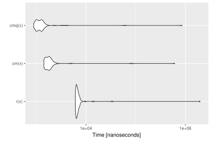
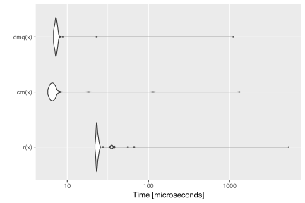
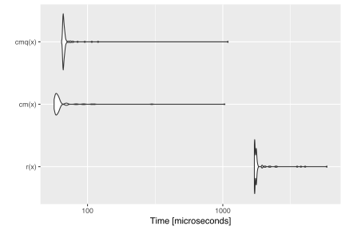
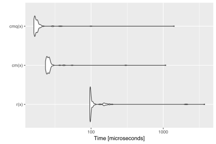
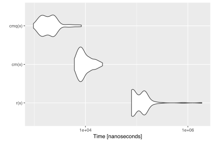

Ever used an R function that produced a not-very-helpful error message, just to discover after minutes of debugging that you simply passed a wrong argument?
Blaming the laziness of the package author for not doing such standard checks (in a dynamically typed language such as R) is at least partially unfair, as R makes theses types of checks cumbersome and annoying. Well, that’s how it was in the past.
Enter checkmate.
Virtually every standard type of user error when passing arguments into function can be caught with a simple, readable line which produces an informative error message in case. A substantial part of the package was written in C to minimize any worries about execution time overhead.
As a motivational example, consider you have a function to calculate the faculty of a natural number and the user may choose between using either the stirling approximation or R’s factorial function (which internally uses the gamma function). Thus, you have two arguments, n and method. Argument n must obviously be a positive natural number and method must be either "stirling" or "factorial". Here is a version of all the hoops you need to jump through to ensure that these simple requirements are met:
fact <- function(n, method = "stirling") {
if (length(n) != 1)
stop("Argument 'n' must have length 1")
if (!is.numeric(n))
stop("Argument 'n' must be numeric")
if (is.na(n))
stop("Argument 'n' may not be NA")
if (is.double(n)) {
if (is.nan(n))
stop("Argument 'n' may not be NaN")
if (is.infinite(n))
stop("Argument 'n' must be finite")
if (abs(n - round(n, 0)) > sqrt(.Machine$double.eps))
stop("Argument 'n' must be an integerish value")
n <- as.integer(n)
}
if (n < 0)
stop("Argument 'n' must be >= 0")
if (length(method) != 1)
stop("Argument 'method' must have length 1")
if (!is.character(method) || !method %in% c("stirling", "factorial"))
stop("Argument 'method' must be either 'stirling' or 'factorial'")
if (method == "factorial")
factorial(n)
else
sqrt(2 * pi * n) * (n / exp(1))^n
}And for comparison, here is the same function using checkmate:
fact <- function(n, method = "stirling") {
assertCount(n)
assertChoice(method, c("stirling", "factorial"))
if (method == "factorial")
factorial(n)
else
sqrt(2 * pi * n) * (n / exp(1))^n
}The functions can be split into four functional groups, indicated by their prefix.
If prefixed with assert, an error is thrown if the corresponding check fails. Otherwise, the checked object is returned invisibly. There are many different coding styles out there in the wild, but most R programmers stick to either camelBack or underscore_case. Therefore, checkmate offers all functions in both flavors: assert_count is just an alias for assertCount but allows you to retain your favorite style.
The family of functions prefixed with test always return the check result as logical value. Again, you can use test_count and testCount interchangeably.
Functions starting with check return the error message as a string (or TRUE otherwise) and can be used if you need more control and, e.g., want to grep on the returned error message.
expect is the last family of functions and is intended to be used with the testthat package. All performed checks are logged into the testthat reporter. Because testthat uses the underscore_case, the extension functions only come in the underscore style.
All functions are categorized into objects to check on the package help page.
You can use assert to perform multiple checks at once and throw an assertion if all checks fail.
Here is an example where we check that x is either of class foo or class bar:
f <- function(x) {
assert(
checkClass(x, "foo"),
checkClass(x, "bar")
)
}Note that assert(, combine = "or") and assert(, combine = "and") allow to control the logical combination of the specified checks, and that the former is the default.
The following functions allow a special syntax to define argument checks using a special format specification. E.g., qassert(x, "I+") asserts that x is an integer vector with at least one element and no missing values. This very simple domain specific language covers a large variety of frequent argument checks with only a few keystrokes. You choose what you like best.
To extend testthat, you need to IMPORT, DEPEND or SUGGEST on the checkmate package. Here is a minimal example:
# file: tests/test-all.R
library(testthat)
library(checkmate) # for testthat extensions
test_check("mypkg")Now you are all set and can use more than 30 new expectations in your tests.
test_that("checkmate is a sweet extension for testthat", {
x = runif(100)
expect_numeric(x, len = 100, any.missing = FALSE, lower = 0, upper = 1)
# or, equivalent, using the lazy style:
qexpect(x, "N100[0,1]")
})In comparison with tediously writing the checks yourself in R (c.f. factorial example at the beginning of the vignette), R is sometimes a tad faster while performing checks on scalars. This seems odd at first, because checkmate is mostly written in C and should be comparably fast. Yet many of the functions in the base package are not regular functions, but primitives. While primitives jump directly into the C code, checkmate has to use the considerably slower .Call interface. As a result, it is possible to write (very simple) checks using only the base functions which, under some circumstances, slightly outperform checkmate. However, if you go one step further and wrap the custom check into a function to convenient re-use it, the performance gain is often lost (see benchmark 1).
For larger objects the tide has turned because checkmate avoids many unnecessary intermediate variables. Also note that the quick/lazy implementation in qassert/qtest/qexpect is often a tad faster because only two arguments have to be evaluated (the object and the rule) to determine the set of checks to perform.
Below you find some (probably unrepresentative) benchmark. But also note that this one here has been executed from inside knitr which is often the cause for outliers in the measured execution time. Better run the benchmark yourself to get unbiased results.
x is a flaglibrary(ggplot2)
library(microbenchmark)
x = TRUE
r = function(x, na.ok = FALSE) { stopifnot(is.logical(x), length(x) == 1, na.ok || !is.na(x)) }
cm = function(x) assertFlag(x)
cmq = function(x) qassert(x, "B1")
mb = microbenchmark(r(x), cm(x), cmq(x))
print(mb)## Unit: microseconds
## expr min lq mean median uq max neval
## r(x) 7.473 7.8350 39.76346 8.6215 9.0595 3093.366 100
## cm(x) 1.890 2.1575 14.10387 2.3505 2.6155 978.698 100
## cmq(x) 1.232 1.4710 21.31853 1.5725 1.7560 1405.459 100autoplot(mb)
x is a numeric of length 1000 with no missing nor NaN valuesx = runif(1000)
r = function(x) stopifnot(is.numeric(x) && length(x) == 1000 && all(!is.na(x) & x >= 0 & x <= 1))
cm = function(x) assertNumeric(x, len = 1000, any.missing = FALSE, lower = 0, upper = 1)
cmq = function(x) qassert(x, "N1000[0,1]")
mb = microbenchmark(r(x), cm(x), cmq(x))
print(mb)## Unit: microseconds
## expr min lq mean median uq max neval
## r(x) 21.928 22.9505 79.05644 23.2400 24.1375 5406.364 100
## cm(x) 5.757 6.2655 21.11187 6.5950 7.0175 1337.546 100
## cmq(x) 6.767 7.0705 18.48976 7.2595 7.4690 1112.730 100autoplot(mb)
x is a character vector with no missing values nor empty stringsx = sample(letters, 10000, replace = TRUE)
r = function(x) stopifnot(is.character(x) && !any(is.na(x)) && all(nchar(x) > 0))
cm = function(x) assertCharacter(x, any.missing = FALSE, min.chars = 1)
cmq = function(x) qassert(x, "S+[1,]")
mb = microbenchmark(r(x), cm(x), cmq(x))
print(mb)## Unit: microseconds
## expr min lq mean median uq max neval
## r(x) 1711.251 1720.5520 1882.76476 1760.9710 1771.3435 5889.198 100
## cm(x) 56.628 58.1185 74.42987 59.6730 61.8155 1036.251 100
## cmq(x) 64.354 65.9260 78.80730 66.5395 67.6140 1093.695 100autoplot(mb)
x is a data frame with no missing valuesN = 10000
x = data.frame(a = runif(N), b = sample(letters[1:5], N, replace = TRUE), c = sample(c(FALSE, TRUE), N, replace = TRUE))
r = function(x) is.data.frame(x) && !any(sapply(x, function(x) any(is.na(x))))
cm = function(x) testDataFrame(x, any.missing = FALSE)
cmq = function(x) qtest(x, "D")
mb = microbenchmark(r(x), cm(x), cmq(x))
print(mb)## Unit: microseconds
## expr min lq mean median uq max neval
## r(x) 96.052 97.3305 184.78598 97.9675 105.3560 3762.353 100
## cm(x) 23.332 24.3195 39.58351 25.5490 26.5055 1088.691 100
## cmq(x) 16.115 16.5210 32.96119 17.1235 18.1600 1425.183 100autoplot(mb)
# checkmate tries to stop as early as possible
x$a[1] = NA
mb = microbenchmark(r(x), cm(x), cmq(x))
print(mb)## Unit: microseconds
## expr min lq mean median uq max neval
## r(x) 80.093 88.8285 171.03868 110.2555 141.7335 4502.965 100
## cm(x) 5.923 7.2990 10.81839 8.6655 12.1680 50.337 100
## cmq(x) 1.141 1.5150 2.40153 2.1580 2.8280 5.789 100autoplot(mb)
To extend checkmate a custom check* function has to be written. For example, to check for a square matrix one can re-use parts of checkmate and extend the check with additional functionality:
checkSquareMatrix = function(x, mode = NULL) {
# check functions must return TRUE on success
# and a custom error message otherwise
res = checkMatrix(x, mode = mode)
if (!isTRUE(res))
return(res)
if (nrow(x) != ncol(x))
return("Must be square")
return(TRUE)
}
# a quick test:
X = matrix(1:9, nrow = 3)
checkSquareMatrix(X)## [1] TRUEcheckSquareMatrix(X, mode = "character")## [1] "Must store characters"checkSquareMatrix(X[1:2, ])## [1] "Must be square"The respective counterparts to the check-function can be created using the constructors makeAssertionFunction, makeTestFunction and makeExpectationFunction:
# For assertions:
assert_square_matrix = assertSquareMatrix = makeAssertionFunction(checkSquareMatrix)
print(assertSquareMatrix)## function (x, mode = NULL, .var.name = vname(x), add = NULL)
## {
## res = checkSquareMatrix(x, mode)
## makeAssertion(x, res, .var.name, add)
## }# For tests:
test_square_matrix = testSquareMatrix = makeTestFunction(checkSquareMatrix)
print(testSquareMatrix)## function (x, mode = NULL)
## {
## identical(checkSquareMatrix(x, mode), TRUE)
## }# For expectations:
expect_square_matrix = makeExpectationFunction(checkSquareMatrix)
print(expect_square_matrix)## function (x, mode = NULL, info = NULL, label = vname(x))
## {
## res = checkSquareMatrix(x, mode)
## makeExpectation(x, res, info, label)
## }Note that all the additional arguments .var.name, add, info and label are automatically joined with the function arguments of your custom check function. Also note that if you define these functions inside an R package, the constructors are called at build-time (thus, there is no negative impact on the runtime).
The package registers two functions which can be used in other packages’ C/C++ code for argument checks.
SEXP qassert(SEXP x, const char *rule, const char *name);
Rboolean qtest(SEXP x, const char *rule);These are the counterparts to qassert and qtest. Due to their simplistic interface, they perfectly suit the requirements of most type checks in C/C++.
For detailed background information on the register mechanism, see the Exporting C Code section in Hadley’s Book “R Packages” or WRE. Here is a step-by-step guide to get you started:
checkmate to your “Imports” and “LinkingTo” sections in your DESCRIPTION file."checkmate_stub.c". See example below.<checkmate.h> in each compilation unit where you want to use checkmate./* Example for (2), "checkmate_stub.c":*/
#include <checkmate.h>
#include <checkmate_stub.c>For the sake of completeness, here the sessionInfo() for the benchmark (but remember the note before on knitr possibly biasing the results).
sessionInfo()## R version 3.4.1 (2017-06-30)
## Platform: x86_64-apple-darwin15.6.0 (64-bit)
## Running under: macOS Sierra 10.12.6
##
## Matrix products: default
## BLAS: /Library/Frameworks/R.framework/Versions/3.4/Resources/lib/libRblas.0.dylib
## LAPACK: /Library/Frameworks/R.framework/Versions/3.4/Resources/lib/libRlapack.dylib
##
## locale:
## [1] de_DE.UTF-8/de_DE.UTF-8/de_DE.UTF-8/C/de_DE.UTF-8/de_DE.UTF-8
##
## attached base packages:
## [1] stats graphics grDevices utils datasets base
##
## other attached packages:
## [1] microbenchmark_1.4-2.1 ggplot2_2.2.1 checkmate_1.8.4
##
## loaded via a namespace (and not attached):
## [1] Rcpp_0.12.12 digest_0.6.12 rprojroot_1.2 plyr_1.8.4
## [5] grid_3.4.1 gtable_0.2.0 backports_1.1.1 magrittr_1.5
## [9] scales_0.5.0 evaluate_0.10.1 rlang_0.1.2.9000 stringi_1.1.5
## [13] lazyeval_0.2.0 rmarkdown_1.6 tools_3.4.1 stringr_1.2.0
## [17] munsell_0.4.3 yaml_2.1.14 compiler_3.4.1 colorspace_1.3-2
## [21] htmltools_0.3.6 knitr_1.17 tibble_1.3.4 methods_3.4.1